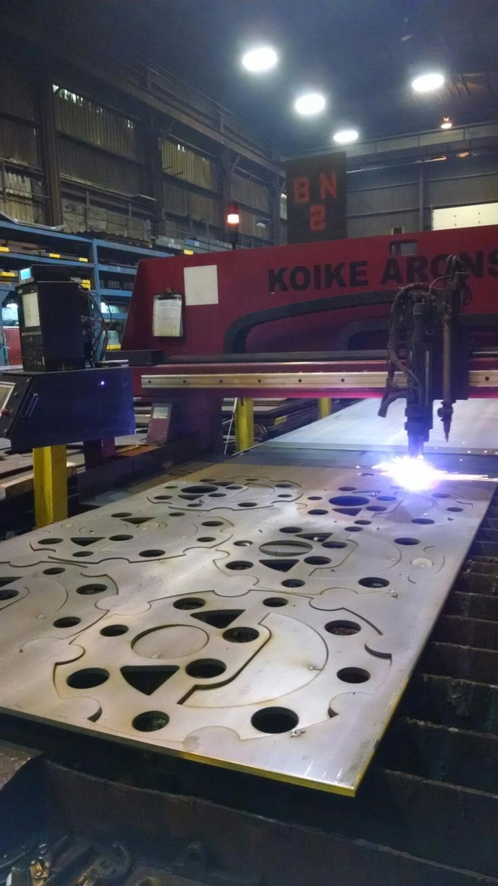
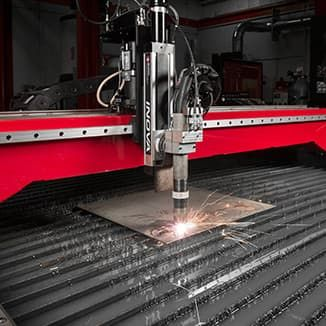

一、三篇最值得优先引用的经典论文
下面三篇是套料（不规则排样）方向最常被作为起点的文献：一篇讲快速构造初始布局，一篇讲几何与碰撞内核，一篇讲局部交换改进。三者合在一起，正好对应工程软件里的「构造 → 几何检测 → 局部优化」链路。
1.1 经典论文 1：Burke、Hellier、Kendall 与 Whitwell（2006）
这篇论文的价值在于，它把「把零件尽量往左下角塞紧」这种看似简单的经验，变成了适用于复杂多边形的系统算法。它的引用影响力来自两个方面：第一，算法实现相对清晰，容易复现；第二，它经常被后续遗传算法、模拟退火、禁忌搜索和大邻域搜索用作初始解生成器或基准算法。
用高中生能理解的方式解释问题
想象一张大铁板和一堆形状各异的拼图。每块拼图都必须完整放在铁板上，不能相互重叠，还要留出切割缝。你希望放下尽可能多的拼图，剩下的空白越少越好。
最自然的整理方法是：每放一块拼图，就尽可能把它推向左边和下边。这样可以减少「悬空」的空洞。可是船舶零件并不是规则方块，某些零件有凹槽，某些零件需要旋转 90° 或 180°，所以「左下」并不意味着简单地按矩形坐标排列。
数学模型
设板材为矩形区域
\[ B=[0,W]\times[0,H] \]
其中 \(W\) 是板长，\(H\) 是板宽。设零件集合为
\[ P=\{P_1,P_2,\ldots,P_n\} \]
对每个零件 \(P_i\)，需要确定平移位置 \((x_i,y_i)\) 和旋转角 \(\theta_i\)。放置后的形状写为
\[ P_i(x_i,y_i,\theta_i)=T(x_i,y_i)R(\theta_i)P_i \]
每个零件要满足板材边界约束：
\[ P_i(x_i,y_i,\theta_i)\subseteq B \]
任意两个零件不能交叠：
\[ P_i(x_i,y_i,\theta_i)\cap P_j(x_j,y_j,\theta_j)=\varnothing,\quad i\neq j \]
实际切割时还必须考虑割缝。假设割缝宽度为 \(k\)，定位安全余量为 \(s\)，则可以把零件外轮廓向外膨胀
\[ r=\frac{k}{2}+s \]
形成安全区域
\[ P_i^{safe}=P_i\oplus D(r) \]
其中 \(D(r)\) 是半径为 \(r\) 的圆盘，\(\oplus\) 是 Minkowski 和。通俗地说，就是在每个零件外面画一圈「禁止其他零件进入」的缓冲带。
目标函数通常首先最小化排样包络长度或未利用面积：
\[ \min f=\alpha H_{used}+\beta A_{void}+\gamma N_{fragment} \]
- \(H_{used}\) 是排样后使用到的板材高度；
- \(A_{void}\) 是剩余空洞面积；
- \(N_{fragment}\) 是被切割成无法再利用的小余料数量；
- \(\alpha,\beta,\gamma\) 是权重。
船厂更关心材料利用率：
\[ \eta=\frac{\sum_{i=1}^{n}A(P_i)}{A(B)} \]
但 \(\eta\) 只是面积指标，不能说明切割时间和后续装配是否方便。
算法流程
第一步，给零件排序。通常把面积大、边界复杂、可旋转角度少的零件优先处理。原因很简单：复杂零件可选择的位置较少，留到最后容易放不进去。
第二步，生成候选姿态。对于船舶平面零件，可以尝试 0°、90°、180° 和 270°；若钢板轧制方向不受限制，还可允许更多角度。角度数量越多，搜索空间越大。
第三步，寻找「左下可行位置」。算法从当前布局的左下区域开始扫描，判断候选位置是否越界或碰撞。一旦找到可行位置，就继续向左、向下推进，直到再推进会产生碰撞。
第四步，评价候选位置。评价不仅看坐标，还会看新产生的空洞面积、与板边的距离、是否堵住大型零件的未来位置。
第五步，继续放置下一个零件，直到所有零件都排入板材或确认需要增加一张板材。
它真正解决了什么难题
二维不规则排样的困难来自组合爆炸。假设有 100 个零件，每个零件有 4 个角度，每个零件平均有 20 个候选位置，即使完全忽略零件之间的相互影响，粗略组合规模也达到
\[ (4\times20)^{100} \]
这个数远远超出穷举能力。BLF 的策略是：不检查所有可能，而是只保留「看起来有希望」的靠左下位置，把搜索从指数级的全部布局缩减成一条可计算路径。
船舶案例化解释
假设一张 12 m × 3 m 的钢板上要放置：4 个大型舱壁板；12 个肋骨零件；30 个小型加强板；50 个圆孔或长圆孔补强件。
如果先放小加强板，它们可能占据大型舱壁板所需的连续空间。BLF 的改进策略通常会优先处理大型和复杂零件，再用小零件填充空洞。最终利用率可能比随机顺序高出几个百分点，但具体提升取决于零件形状、角度限制和板材尺寸，不能直接套用某个固定百分比。
局限与后续策略
BLF 是贪心算法，容易陷入局部最优。一个零件现在贴近左下角，短期看来很好，却可能把后续复杂零件的通道堵死。因此工程软件常用组合方法：
- BLF 先快速生成可行初始解；
- 遗传算法重新调整零件顺序；
- 模拟退火允许暂时接受较差解，以跳出局部最优；
- 大邻域搜索拆掉一部分零件并重新排布；
- 人工交互保留工艺人员对关键零件的控制权。
1.2 经典论文 2：Bennell 与 Oliveira（2008）
这篇论文是几何套料领域最重要的教程型文献之一。它不只介绍某一个搜索算法，而是解释套料软件最底层的问题：计算机怎样准确判断两个复杂零件会不会碰撞、怎样描述凹多边形、怎样生成可碰撞区域，以及几何误差如何影响最终 NC 文件。
为什么「几何」比「摆放规则」更基础
人看两块板件时，可以凭直觉判断它们是否相交。程序必须把这个判断转化为数学运算。只要几何判断错一次，后续结果就可能出现：
- 两个零件切割后发生重叠；
- 零件之间间隙太小，切割热量互相影响；
- 凹槽没有被正确识别；
- 内孔边界方向反了，导致加工路径错误；
- 圆弧离散误差导致实际尺寸超差。
碰撞约束的数学表达
设形状 A 固定，形状 B 的平移向量为 \(t\)。当
\[ (A+t)\cap B\neq\varnothing \]
时，说明两个零件相交。所有会发生碰撞的平移向量组成一个集合：
\[ NFP(A,B)=A\oplus(-B) \]
这个集合称为 No-Fit Polygon，简称 NFP。中文常译为「不适配多边形」或「不重叠多边形」。不同中文文献译法不完全统一，但本质都是描述「第二个零件放在哪里会撞上第一个零件」。
如果零件 B 的参考点位于 NFP 内，则 A 与 B 重叠；如果参考点位于 NFP 外，则有可能不重叠，仍需检查板材边界和安全距离。
用拼图解释 NFP
把 A 想成固定在桌面上的拼图。拿着 B 在桌面上移动：
- B 进入某个区域时，两个拼图相撞；
- B 的参考点沿着边界移动时，两个拼图刚好接触；
- 由这些接触位置围成的轨迹，就是碰撞计算的重要边界。
NFP 的好处是：当一个零件与另一个零件的相对姿态确定后，程序可以快速查询「哪些位置不能放」，不需要每次从头进行复杂的边界交叉计算。
凹多边形与内孔为什么难
凸多边形的边界结构简单，边界法向方向比较一致。船舶零件通常包含凹槽、开口和内孔。例如一个带圆孔的肋板，外轮廓是一条闭合曲线，圆孔又是一条内轮廓。算法必须区分：
- 外轮廓代表材料区域边界；
- 内孔代表需要去除的区域；
- 凹槽可能与外轮廓连通，也可能是封闭孔；
- 自相交曲线必须修复，否则面积计算和碰撞检测都会错误。
如果把内孔误识别成外轮廓，软件可能把孔内部当成实体材料，导致零件间距计算错误；如果把凹槽填平，原本可以嵌入小零件的空间会被浪费。
几何容差
工程 CAD 数据中常有非常短的线段、重复点、未闭合端点和浮点误差。假设两条线理论上应该相接，实际坐标却相差 0.001 mm。程序必须定义一个容差 \(\varepsilon\)：
\[ \|p_1-p_2\|<\varepsilon \Rightarrow p_1,p_2 \text{ 视为同一点} \]
容差太小，轮廓无法闭合；容差太大，细小孔洞和窄槽可能被错误合并。船厂一般会根据图纸精度、设备精度和材料厚度设置不同容差，不能简单地设成一个固定值。
对船舶套料的具体价值
船舶外板展开件、舱壁板、肋骨和加强材往往具有复杂曲线。采用外接矩形判断碰撞会严重浪费板材，因为两个零件的外接矩形可能相交，但真实轮廓之间仍有凹槽空间。NFP 使软件能够利用真实边界，把适合的小零件嵌入凹槽，从而提高材料利用率。
几何内核与优化层的分工
一个可靠套料系统至少包含两层：
几何内核负责轮廓清洗、曲线离散、偏置、内外轮廓识别、NFP、碰撞检测和边界约束。
优化层负责零件排序、旋转角选择、板材选择、局部交换、路径规划和目标函数计算。
如果几何内核不稳定，优化算法越复杂，错误反而越难排查。很多看起来是「优化不够好」的问题，实际根源是 CAD 轮廓没有闭合、单位错位、圆弧离散精度不足或坐标方向不一致。
1.3 经典论文 3：Gomes 与 Oliveira（2002）
注：个别资料曾误写为 International Journal of Production Economics；以上期刊、卷期与 DOI 已按 Crossref 核对。
这篇论文代表了另一条经典路线：先得到一个可行套料，再通过交换零件位置持续改进。它的重要性在于，很多后续算法都沿用「局部重排」的思想。
2-exchange 是什么
假设当前排样中有两个零件 A 和 B。2-exchange 的意思是尝试交换它们的位置，看看整体结果是否更好。更广义地说，也可以交换两个零件的顺序、旋转角或所属板材。
通俗地说，就是把已经摆好的拼图拿出来，交换其中两块。如果空洞减少、板材利用率提高，保留这次交换；如果变差，就撤销。
数学模型
设当前布局为
\[ S=(s_1,s_2,\ldots,s_n) \]
其中 \(s_i\) 代表第 i 个零件的姿态和位置。定义评价函数
\[ F(S)=w_1(1-\eta(S))+w_2L_{empty}(S)+w_3T(S)+w_4P_{violation}(S) \]
- \(\eta(S)\) 是材料利用率；
- \(L_{empty}(S)\) 是空行程或碎片化空洞指标；
- \(T(S)\) 是估计切割时间；
- \(P_{violation}(S)\) 是工艺约束惩罚；
- 目标是最小化 \(F(S)\)。
对布局中的两个零件 i 和 j，构造邻域解
\[ S' = N_{ij}(S) \]
如果
\[ F(S')<F(S) \]
就接受交换。
为什么局部交换有用
初始排样通常不完美，可能存在：两个复杂零件之间形成狭长空洞；小零件被分散在板材各处，导致切割路径很长；大零件附近有一块无法利用的三角形区域；某个零件的旋转方向导致坡口朝向错误。交换零件位置通常比完全重新排样更快，也更容易保留人工已经确认的关键布局。
典型局部搜索流程
- 使用 BLF 或人工方式生成初始布局；
- 计算利用率、空洞、切割长度和工艺违约数；
- 选择一对零件进行交换；
- 重新检查板材边界和碰撞；
- 计算新的评价函数；
- 如果结果改善，则接受交换；
- 若连续多次没有改善，改变交换策略或引入 3-exchange、旋转变异、随机扰动；
- 达到时间限制或收敛条件后输出结果。
船舶场景案例
设某分段需要切割 180 个平面零件。初始方案利用率为 84.5%，但其中 12 个小件散落在板材各处，切割头需要频繁跨越移动。局部交换把几个形状相近的小件聚集到同一片区域，同时把一个长条加强材移到板材边缘，可能在不增加板材数量的情况下减少空行程。
这里不能直接声称「必然提高 5%」或「减少 30% 时间」。正确做法是：在相同零件清单、相同板材规格和相同设备参数下，对比交换前后的实际数据，并记录均值和方差。
局限
纯粹的 2-exchange 只能看到两个零件之间的变化。有些布局需要同时移动 3 个或更多零件才能释放空间。此时可以使用：3-exchange；破坏—重建；大邻域搜索；模拟退火；禁忌搜索；遗传算法与局部搜索混合。
这也是为什么经典套料软件通常不会依赖单一算法，而是采用「快速构造 + 局部改进 + 规则修复」的混合架构。
二、三篇经典论文之间的关系

| 论文 | 核心贡献 | 通俗理解 | 船舶软件中的位置 |
|---|---|---|---|
| Burke 等，2006 | Bottom-Left-Fill | 尽量靠左下塞紧 | 快速生成初始布局 |
| Bennell 与 Oliveira，2008 | 几何与 NFP 教程 | 判断两个复杂拼图会不会撞 | 碰撞检测与几何内核 |
| Gomes 与 Oliveira，2002 | 2-exchange 局部搜索 | 交换两块拼图继续改进 | 局部优化与人工交互调整 |
实际系统可以按下面的顺序组合：
\[ \text{CAD轮廓清洗}\rightarrow \text{NFP碰撞检测}\rightarrow \text{BLF初始排样}\rightarrow \text{2-exchange局部改进}\rightarrow \text{路径与工艺优化} \]
三、近年前沿方向一：考虑切割工艺、热变形和设备约束的船舶钢板多目标套料
3.1 这类论文研究什么

早期套料算法主要回答一个问题：一批不规则零件怎样摆在钢板上，剩料最少。近年的船舶研究把问题扩展为「怎样摆放，才能让材料、时间、切割质量和后续生产节拍同时较优」。
船舶钢板切割具有明显工艺差异。厚板可能使用火焰切割，中薄板常用等离子或激光；坡口切割需要改变割炬角度；长条零件密集排列会造成热量集中和板材翘曲；零件间距太小会出现挂渣、熔穿或热影响叠加。因此，仅以面积利用率作为目标会得到「纸面上节材、现场上难切」的方案。
3.2 通俗问题描述
假设有两种排样方案：
- 方案 A 把零件挤得很紧，钢板利用率高；
- 方案 B 留出更合理的间距，利用率略低。
如果方案 A 让割炬频繁抬刀、长距离空走，并且使钢板严重变形，实际生产成本可能高于方案 B。近年前沿论文研究的重点，就是把「省钢材」和「好加工」放进同一个决策模型。
3.3 典型数学模型
设第 \(i\) 个零件的状态为
\[ z_i=(x_i,y_i,\theta_i,b_i,o_i) \]
其中：
- \((x_i,y_i)\)：零件在钢板上的位置；
- \(\theta_i\)：旋转角度；
- \(b_i\)：分配到的钢板或余料编号；
- \(o_i\)：切割顺序中的位置。
几何可行性约束为
\[ P_i(z_i)\subseteq B_{b_i} \]
以及
\[ P_i(z_i)\cap P_j(z_j)=\varnothing,\quad i\neq j \]
考虑安全间距后，通常对零件轮廓进行外扩：
\[ P_i^{safe}=P_i\oplus D(r_i) \]
其中 \(r_i\) 与割缝宽度、板厚、定位误差和热影响有关。
材料利用率为
\[ \eta=\frac{\sum_i A(P_i)}{\sum_b A(B_b)} \]
切割时间可以近似写成
\[ T=\sum_i \frac{L_i}{v_i(m_i,t_i)}+\sum_i t_{pierce,i}+\sum_i t_{lift,i}+t_{travel} \]
其中：
- \(L_i\)：零件轮廓的切割长度；
- \(v_i\)：与材料牌号、厚度和设备有关的切割速度；
- \(t_{pierce,i}\)：穿孔时间；
- \(t_{lift,i}\)：抬刀、换向和换枪时间；
- \(t_{travel}\)：空行程时间。
热风险可以用一个工程化代理指标表示：
\[ H=\sum_{c\in C}\frac{Q_c}{A_c} \]
其中 \(Q_c\) 表示区域 \(c\) 内一段时间的累计热输入，\(A_c\) 是该区域面积。论文中也可能用局部切割长度密度、连续切割时间或相邻路径距离代替完整热传导模型。
综合目标可写成
\[ \min F=w_m(1-\eta)+w_tT+w_hH+w_qR_q+w_lC_l \]
- \(1-\eta\)：材料浪费；
- \(T\)：加工时间；
- \(H\)：热累积风险；
- \(R_q\)：挂渣、变形、尺寸超差等质量风险；
- \(C_l\)：上料、下料、码垛和物流成本。
这类问题通常是多目标优化。它往往不存在同时让所有目标达到最小的唯一方案，而是产生一组 Pareto 方案：一个方案更节材，另一个方案更快，第三个方案热变形风险更低。
3.4 常用求解策略
第一阶段是几何可行解生成。使用 NFP、碰撞检测和 Bottom-Left-Fill，把零件放到钢板上。
第二阶段是组合优化。遗传算法改变零件顺序、旋转角和板材选择；模拟退火接受部分暂时变差的布局，以跳出局部最优；大邻域搜索拆除一部分零件，再重新插入。
第三阶段是工艺修复。对不满足坡口方向、最小间距、共边和引入引出要求的方案进行修正。
第四阶段是切割路径优化。根据穿孔次数、空行程、闭环切割顺序和零件稳定性重新安排 NC 路径。
第五阶段是多方案输出。系统不只给一个「最优」结果，而是展示：
- 节材优先方案；
- 生产节拍优先方案；
- 低热变形优先方案。
3.5 这类论文的研究难点
第一个难点是热变形难以快速计算。有限元仿真更准确，却很慢；纯经验公式速度快，但换材料、换设备后可能失效。研究上常见的解决思路是使用少量高精度仿真或现场试切数据训练代理模型，在优化迭代中用代理模型快速估计热风险。
第二个难点是目标权重依赖订单。赶交期时，切割时间权重会提高；钢材昂贵或库存紧张时，材料成本权重会提高。优秀的工程系统通常允许工艺人员调节权重，并实时看到利用率、时间和风险的变化。
第三个难点是「几何最优」与「生产可执行」之间存在差距。论文中的零件可能是干净的多边形，真实船厂数据却包含断线、重复线、单位不一致、版本混杂和人工修改痕迹。因此研究必须把 CAD 清洗、工艺规则库和 NC 后处理一起考虑。
3.6 前沿创新点通常体现在哪里
- 从单目标面积利用率转向材料、时间、热影响、质量和物流的多目标模型；
- 将设备参数、割缝宽度、坡口角度和穿孔时间直接放入目标函数；
- 使用热风险代理模型，减少每次都做完整有限元计算的成本；
- 输出 Pareto 前沿，让工艺人员参与方案选择；
- 将余料管理与新板选择统一建模；
- 用真实切割数据校准速度、穿孔时间和变形风险。
四、近年前沿方向二：套料、切割、喷码、码垛和装配追溯的一体化算法
4.1 这类论文研究什么

传统套料软件的输出通常是一张排样图和一组 NC 文件。现代船厂还需要知道：每个零件属于哪艘船、哪个分段、哪个托盘、哪个装配工位，以及现场使用的文件是否与最新设计版本一致。
因此，近年的另一条主线把套料看成生产准备数字主线的一环：
\[ \text{三维模型}\rightarrow\text{零件解析}\rightarrow\text{BOM}\rightarrow\text{二维展开}\rightarrow\text{套料}\rightarrow\text{NC}\rightarrow\text{喷码}\rightarrow\text{切割}\rightarrow\text{码垛}\rightarrow\text{分段装配} \]
4.2 通俗问题描述
同一个零件可能经历多个软件：设计软件导出轮廓，BOM 系统分配编号，套料软件决定位置，后处理器转换为设备代码，喷码系统打印标识，现场人员再按分段装配。如果其中一次人工改名或复制文件出错，零件可能「形状对了、编号错了」，或者「编号对了、使用了旧版尺寸」。
所以研究目标不再只有「如何摆放」，还包括「如何让每个零件的数据一路不丢、不混、不旧」。
4.3 带属性零件模型
把零件写成一个带几何和制造属性的对象：
\[ p_i=(g_i,m_i,t_i,q_i,a_i,v_i,r_i) \]
- \(g_i\)：几何轮廓；
- \(m_i\)：材料牌号；
- \(t_i\)：板厚；
- \(q_i\)：质量与检验要求；
- \(a_i\)：装配位置、方向和分段；
- \(v_i\)：设计版本；
- \(r_i\)：船号、分段号、炉批号、托盘号等追溯信息。
核心一致性约束为
\[ V_{CAD}=V_{BOM}=V_{Nest}=V_{NC}=V_{ShopFloor} \]
如果 CAD 已经更新，BOM、套料图或 NC 仍是旧版本，系统应暂停自动下发并要求重新审核。
4.4 一体化目标函数
在材料、时间和质量成本之外加入数据错误成本：
\[ \min F=w_mC_m+w_tT+w_qC_q+w_rC_{rework}+w_dC_{data} \]
其中：
- \(C_m\)：钢板和余料成本；
- \(T\)：切割与设备占用时间；
- \(C_q\)：尺寸、坡口、挂渣和变形风险；
- \(C_{rework}\)：返工、补切和重新装配成本；
- \(C_{data}\)：编号错、版本错、属性丢失和格式转换引起的成本。
4.5 算法流程
第一步，解析三维模型或二维零件图，提取几何、材料、板厚、分段、装配方向和零件编号。
第二步，执行几何和属性检查，包括轮廓是否闭合、内孔方向是否正确、单位是否统一、材料和板厚是否完整。
第三步，依据工艺规则生成允许姿态。例如某些零件允许 0°、90°、180°、270°；涉及轧制方向或坡口方向的零件可能只允许 0° 和 180°。
第四步，读取板材与余料库存，计算使用新板、整板余料和历史余料的综合成本。
第五步，运行几何排样和多目标优化。
第六步，联合决定切割顺序、喷码位置、划线位置和码垛顺序。零件摆放位置要方便割炬加工，也要方便机械手抓取和后续分段装配。
第七步，把套料图、NC、喷码文件、零件清单、工艺卡和版本信息绑定成一个生产任务包。
第八步，设备回传实际加工时间、报警、穿孔失败、尺寸检测和质量结果，系统将这些信息用于参数更新和后续排样。
4.6 这类论文的关键难点
第一是数据异构。设计软件、套料软件和设备控制器可能使用不同的图层、坐标原点、单位和编号规则。解决方法通常是建立统一中间数据模型和字段字典，而不是让操作员手动改 DXF 图层。
第二是版本控制。船舶设计变更频繁，局部零件可能在套料后修改尺寸、坡口或材料。系统需要结合版本号、文件哈希、审批状态和变更影响范围判断原 NC 是否仍然有效。
第三是生产扰动。设备故障、材料临时缺货、插单和返修会破坏原计划。前沿系统需要支持「局部重排」：只重算受影响的分段或零件组，保留已经批准和切割完成的部分。
第四是余料的真实可用性。理论上剩余面积足够，并不代表余料能用；余料可能形状破碎、板边变形、表面有热影响区，或者没有可靠的材质与炉批号记录。因此余料需要作为带属性、带质量状态的库存对象管理。
4.7 创新点通常体现在哪里
- 让套料对象从「纯图形」升级为「图形 + 材料 + 工艺 + 装配 + 版本」的制造对象；
- 将新板与余料统一纳入优化模型；
- 将喷码、划线、码垛和装配批次纳入套料输出；
- 通过二维码、RFID 或工位扫描实现零件级追溯；
- 用设备和质量反馈更新速度、间距、切割顺序和风险模型；
- 支持局部重排，适应船厂的动态生产环境。